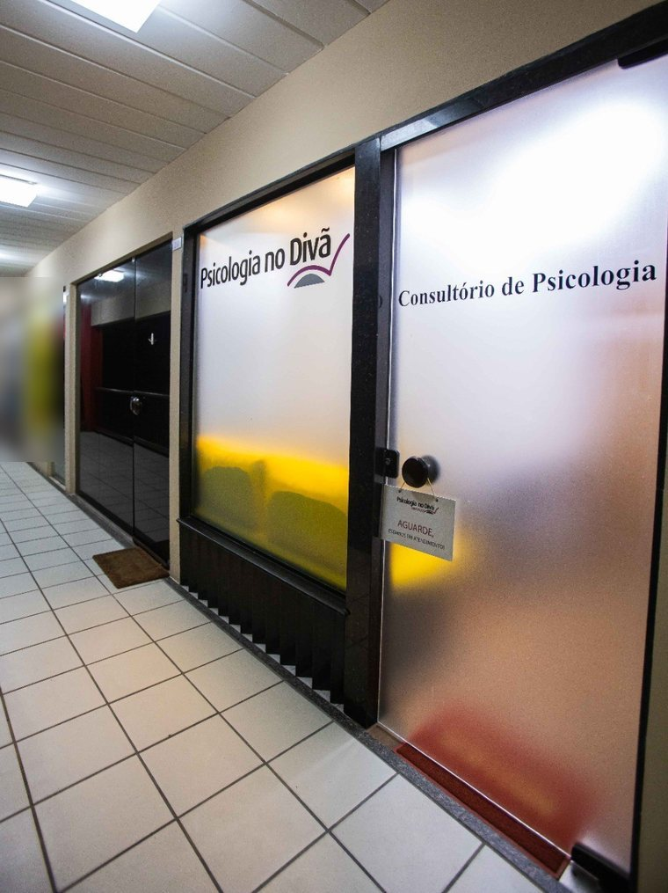
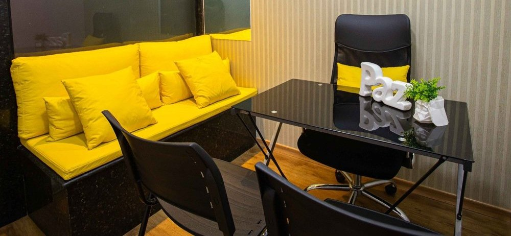
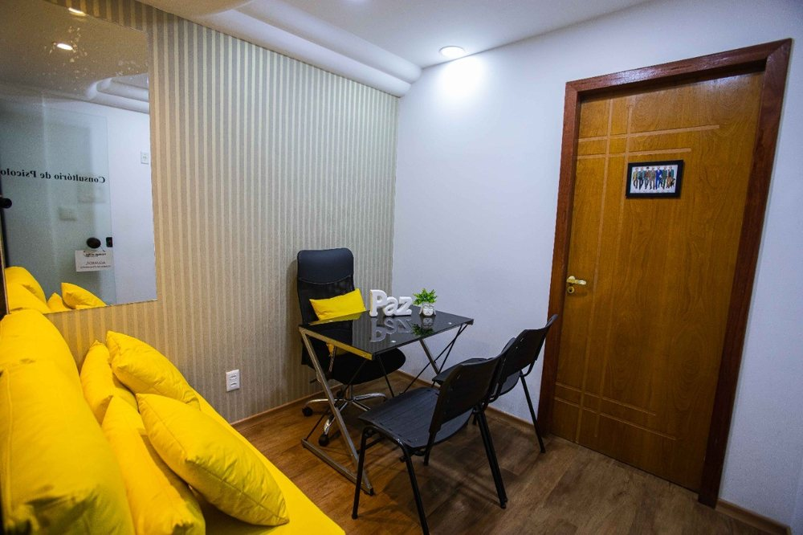
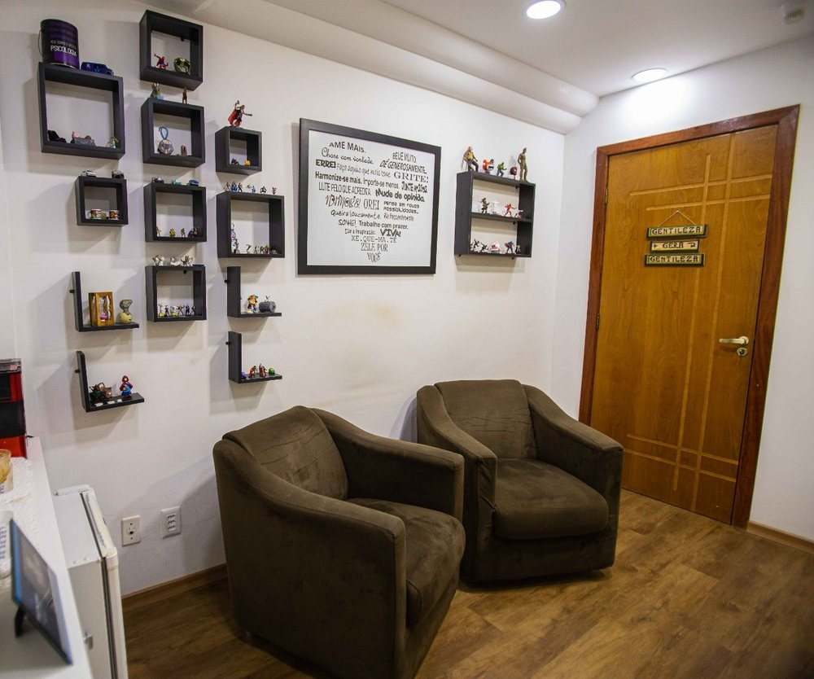
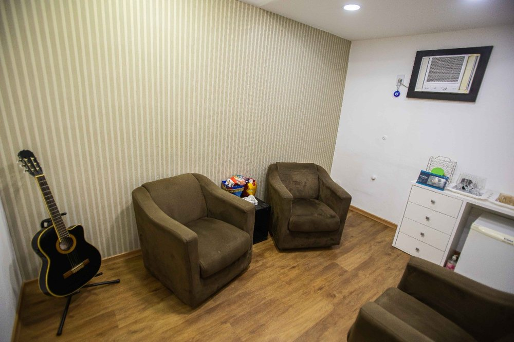

Início · O consultório
O consultório: sofá amarelo, madeira e vidro fosco.
Na sala 210 do Shopping Rio Vermelho, R. Odilon Santos, 205, Rio Vermelho. Um ambiente com sofá amarelo, outro com poltronas marrons — e uma placa de madeira na parede.
Chegada
A porta de vidro


Do corredor, a marca no vidro fosco; do lado de dentro, a luz amarela do sofá. Fotos publicadas pelo consultório na ficha do Google.
Por dentro
As salas



Um ambiente com sofá amarelo, mesa e cadeiras; outro com duas poltronas marrons, prateleiras de madeira, um quadro e um violão.
“Seu atendimento ocorre em ambiente acolhedor e aconchegante, no bairro do Rio Vermelho, onde a pessoa pode sentir-se à vontade para tratar suas questões.”
Perfil na Doctoralia (texto declarado por ele) · ver a fonteDetalhe
Gentileza gera gentileza
A frase pintada na madeira resume o clima que o consultório quer oferecer a quem chega.
Endereço
Endereço e horário
- Endereço: Shopping Rio Vermelho, R. Odilon Santos, 205, sala 210, Rio Vermelho, Salvador – BA, 41940-350.
- Horário: Segunda e terça, das 8h às 19h; domingo, fechado — segundo a ficha do consultório no Google.
- Outros dias: Para os outros dias da semana, consulte a agenda pelo WhatsApp. Atendimento presencial, com hora marcada.
- WhatsApp: (71) 99259-8121.
- Ficha no Google: Psicologia no Divã.
Rota
Mapa
Dúvidas frequentes
Perguntas comuns
Fica dentro do shopping?
Sim: a ficha do Google indica “Localizado em: Shopping Rio Vermelho”, sala 210, na R. Odilon Santos, 205.
Atende aos sábados?
A ficha do Google confirma segunda e terça, das 8h às 19h, e domingo fechado. Para os outros dias, consulte pelo WhatsApp.
Tem estacionamento?
Confirme pelo WhatsApp as orientações de acesso ao Shopping Rio Vermelho.
Agende
Quando fizer sentido, comece por uma conversa.
Na sala 210 do Shopping Rio Vermelho, em Salvador. O agendamento é pelo WhatsApp (71) 99259-8121.